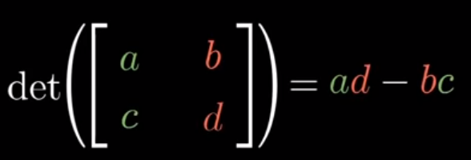
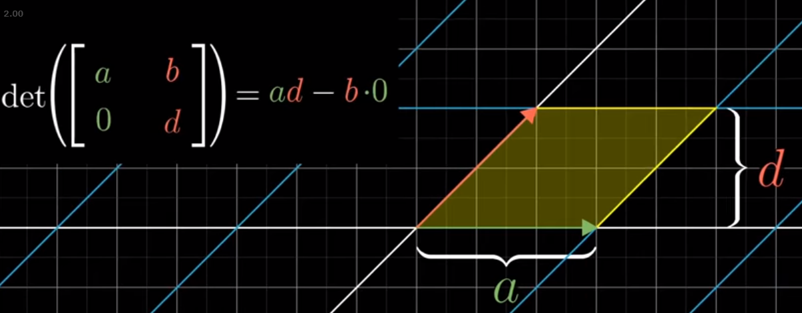
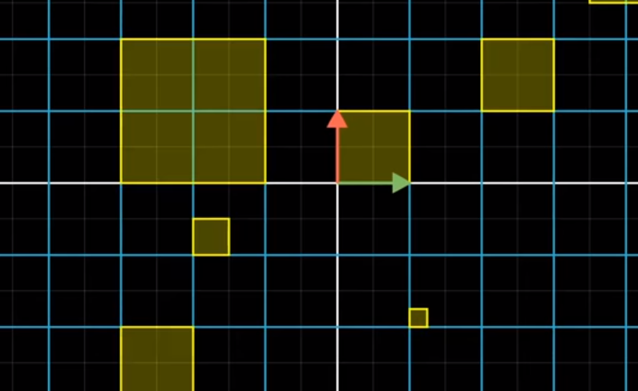

Determinants
Geometric Interpretation
In his video on determinants, 3blue1brown provides a nice geometric interpretation for the determinant of a matrix, A.
Generally, the determinant represents the factor by which a matrix scales the area/volume/etc after a linear transformation.
This is a better approach than rote memorization of the formula for calculating a determinant and just rolling with it (like I did for years).
from IPython.display import Image
Image('images/determinant_formula_2d.PNG')
2D Intuition
To see why this is the case, let’s consider a couple simple shapes/transformations.
As mentioned in our Linear Transformation notebook, we consider the matrix A as the effect on our basis unit vectors i and j. The area of a 1x1 rectangle is obviously 1, so looking at a simple matrix below that stretches our area in a straight line about the X and Y axes, we can see that the form expands to area a * d, which is the same as the growth of scale when dividing by 1.
Image('images/determinant_rectangle.PNG')
Making the transformation a bit spicier, we’ll make our transformation on j one in two dimensions, keeping i in one.
The area of a parallelogram is just the height multiplied by the width, which is still easy enough to see in this form.
Image('images/determinant_parallelogram.PNG')
Finally, making the transformation on both i and j be across two dimensions, 3b1b provided a really elegant geometric representation for the formula that you might have memorized to show that this still holds.
Image('images/determinant_math.PNG')
Extensions
3D
There is, of course, a general form for calculating the determinant, but that’s easily obviated away with numpy
Image('images/determinant_formula.PNG')
Remembering the intuition behind the determinant is far more valueable, imo.
Transformation Non Unit Vector Shapes
As remarked in the notebook on Linear Transformations, the consequence of applying a linear transformation using a matrix A is that parallel and evenly-spaced points remain so after a transformation. And so the scaling of our area follows the same effect for any shape. e.g.
Image('images/det_linearity_before.PNG')
transforming to
Image('images/det_linearity_after.PNG')